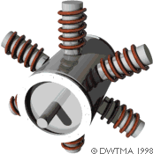
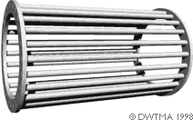
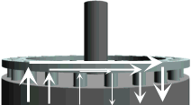

The
picture to the right illustrates the basic principles in the asynchronous
generator, much as we saw it presented on the previous pages.
 In reality, only the rotor part looks different, as you will see on
the this page.
In reality, only the rotor part looks different, as you will see on
the this page.
Asynchronous (Induction) Generators

 Note: Before reading
this page, you should have completed the previous three pages on Wind Turbine Generators.
Note: Before reading
this page, you should have completed the previous three pages on Wind Turbine Generators.
Most wind turbines in the world use a so-called three phase asynchronous
(cage wound) generator, also called an induction generator to generate
alternating current. This type of generator is not widely used outside the
wind turbine industry, and in small hydropower units, but the world has
a lot of experience in dealing with it anyway:
 The curious thing about this type of generator is that it was really
originally designed as an electric motor. In fact, one third of the world's
electricity consumption is used for running induction motors driving machinery
in factories, pumps, fans, compressors, elevators, and other applications
where you need to convert electrical energy to mechanical energy.
The curious thing about this type of generator is that it was really
originally designed as an electric motor. In fact, one third of the world's
electricity consumption is used for running induction motors driving machinery
in factories, pumps, fans, compressors, elevators, and other applications
where you need to convert electrical energy to mechanical energy.
 One reason for choosing this type of generator is that it is very reliable,
and tends to be comparatively inexpensive. The generator also has some mechanical
properties which are useful for wind turbines. (Generator slip,
and a certain overload capability).
One reason for choosing this type of generator is that it is very reliable,
and tends to be comparatively inexpensive. The generator also has some mechanical
properties which are useful for wind turbines. (Generator slip,
and a certain overload capability).
The
key component of the asynchronous generator is the cage rotor.
 (It used to be called a squirrel cage rotor but after it became
politically incorrect to exercise your domestic rodents in a treadmill,
we only have this less captivating name).
(It used to be called a squirrel cage rotor but after it became
politically incorrect to exercise your domestic rodents in a treadmill,
we only have this less captivating name).
The
Cage Rotor
 It is the rotor that makes the asynchronous
generator different from the synchronous generator. The rotor consists of
a number of copper or aluminium bars which are connected electrically by
aluminium end rings, as you see in the picture to the left.
It is the rotor that makes the asynchronous
generator different from the synchronous generator. The rotor consists of
a number of copper or aluminium bars which are connected electrically by
aluminium end rings, as you see in the picture to the left.
 In the picture at the top of the page you see how the rotor is provided
with an "iron" core, using a stack of thin insulated steel laminations,
with holes punched for the conducting aluminium bars. The rotor is placed
in the middle of the stator, which in this case, once again, is a 4-pole
stator which is directly connected to the three phases of the electrical
grid.
In the picture at the top of the page you see how the rotor is provided
with an "iron" core, using a stack of thin insulated steel laminations,
with holes punched for the conducting aluminium bars. The rotor is placed
in the middle of the stator, which in this case, once again, is a 4-pole
stator which is directly connected to the three phases of the electrical
grid.
Motor
Operation
When the current is connected, the machine will start turning like a motor
at a speed which is just slightly below the synchronous speed of the rotating
magnetic field from the stator. Now, what is happening?

 If we look at the
rotor bars from above (in the picture to the right) we have a magnetic field
which moves relative to the rotor. This induces a very strong current in
the rotor bars which offer very little resistance to the current, since
they are short circuited by the end rings.
If we look at the
rotor bars from above (in the picture to the right) we have a magnetic field
which moves relative to the rotor. This induces a very strong current in
the rotor bars which offer very little resistance to the current, since
they are short circuited by the end rings.
 The rotor then develops its own magnetic poles, which in turn become
dragged along by the electromagnetic force from the rotating magnetic field
in the stator.
The rotor then develops its own magnetic poles, which in turn become
dragged along by the electromagnetic force from the rotating magnetic field
in the stator.
Generator
Operation
Now, what happens if we manually crank this rotor around at exactly the
synchronous speed of the generator, e.g. 1500 rpm (revolutions per minute),
as we saw for the 4-pole synchronous generator on the previous page? The
answer is: Nothing. Since the magnetic field rotates at exactly the same
speed as the rotor, we see no induction phenomena in the rotor, and it will
not interact with the stator.
 But what if we increase speed above 1500 rpm? In that case the rotor
moves faster than the rotating magnetic field from the stator, which means
that once again the stator induces a strong current in the rotor. The harder
you crank the rotor, the more power will be transferred as an electromagnetic
force to the stator, and in turn converted to electricity which is fed into
the electrical grid.
But what if we increase speed above 1500 rpm? In that case the rotor
moves faster than the rotating magnetic field from the stator, which means
that once again the stator induces a strong current in the rotor. The harder
you crank the rotor, the more power will be transferred as an electromagnetic
force to the stator, and in turn converted to electricity which is fed into
the electrical grid.
Generator
Slip
The speed of the asynchronous generator will vary with the turning force
(moment, or torque) applied to it. In practice, the difference between the
rotational speed at peak power and at idle is very small, about 1 per cent.
This difference in per cent of the synchronous
speed, is called the generator's slip. Thus a 4-pole generator
will run idle at 1500 rpm if it is attached to a grid with a 50 Hz current.
If the generator is producing at its maximum power, it will be running at
1515 rpm.
 It is a very useful mechanical property that the generator will increase
or decrease its speed slightly if the torque varies. This means that there
will be less tear and wear on the gearbox. (Lower peak torque). This is
one of the most important reasons for using an asynchronous generator rather
than a synchronous generator on a wind turbine which is directly connected
to the electrical grid.
It is a very useful mechanical property that the generator will increase
or decrease its speed slightly if the torque varies. This means that there
will be less tear and wear on the gearbox. (Lower peak torque). This is
one of the most important reasons for using an asynchronous generator rather
than a synchronous generator on a wind turbine which is directly connected
to the electrical grid.
Automatic
Pole Adjustment of the Rotor
Did you notice that we did not specify the number of poles in the stator
when we described the rotor? The clever thing about the cage rotor is that
it adapts itself to the number of poles in the stator automatically. The
same rotor can therefore be used with a wide variety of pole numbers.
Grid
Connection Required
On the page about the permanent magnet synchronous
generator we showed that it could run as a generator without connection
to the public grid.
 An asynchronous generator is different, because it requires the stator
to be magnetised from the grid before it works.
An asynchronous generator is different, because it requires the stator
to be magnetised from the grid before it works.
 You can run an asynchronous generator in a stand alone system, however,
if it is provided with capacitors which supply the necessary magnetisation
current. It also requires that there be some remanence in the rotor iron,
i.e. some leftover magnetism when you start the turbine. Otherwise you will
need a battery and power electronics, or a small diesel generator to start
the system).
You can run an asynchronous generator in a stand alone system, however,
if it is provided with capacitors which supply the necessary magnetisation
current. It also requires that there be some remanence in the rotor iron,
i.e. some leftover magnetism when you start the turbine. Otherwise you will
need a battery and power electronics, or a small diesel generator to start
the system).
|
Back | Home | Forward |
© Copyright 1998 Soren Krohn. All rights reserved.
Updated 6 August 2000
http://www.windpower.org/tour/wtrb/async.htm